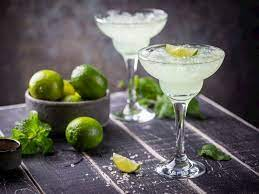

Margarita Recipes

Description
"A margarita is a cocktail consisting of tequila, triple sec, and lime juice. Some margarita recipes include simple syrup as well and are often served with salt on the rim of the glass. Margaritas can be served either shaken with ice (on the rocks), without ice (straight up), or blended with ice (frozen margarita)."
Ingredients
- 2 ounces blanco tequila
- 1/2 ounce orange liqueur
- 1 ounce lime juice, freshly squeezed
- 1/2 ounce agave syrup
- Garnish: lime wheel
- Garnish: kosher salt (optional)
Steps
- Add tequila, orange liqueur, lime juice and agave syrup to a cocktail shaker filled with ice, and shake until well-chilled.
- Strain into a rocks glass over fresh ice.
- Garnish with a lime wheel and kosher salt rim (optional).